01

المسح ثلاثي الأبعاد
المسح ثلاثي الأبعاد وفحص الهندسة
نسجّل العقار بالكامل في ثلاثة أبعاد ونستخرج منه الأرقام الموثوقة: المساحة الفعلية، ومخطط بمقياس رسم صحيح، وارتفاعات الأسقف. أما المقاسات الحرجة فنتحقق منها إضافياً بالليزر بدقة المليمتر.
قياس رقمي للمساحة والمخطط – مقارنة الأمتار المربعة بالإعلان والعقد
مخطط بمقياس رسم صحيح مع أبعاد الغرف وارتفاع الأسقف ومساحة كل غرفة
قياسات تحقّق دقيقة بالليزر – بدقة ±1.5 mm
قياس الميل في التراسات والشرفات وحمامات الاستحمام – هل يصرّف الماء بشكل صحيح؟
المداخل والمنحدرات والأدراج: الميل وأبعاد الدرجات
فحص الشاقولية والاستقامة والاستواء في الجدران والأرضيات
عرض كل الخدمات
أخذ المقاسات للمطبخ والأثاث والتجديد – مباشرة من النموذج ثلاثي الأبعاد
الأبواب والنوافذ: مقاسات الفتحات للاستبدال والتعديل
تصدير كمخطط أو سحابة نقاط أو ملف CAD لمهندسك
توثيق جميع القياسات في التقرير
حالة نموذجية: التحقق من المساحة الفعلية قبل التوقيع – في الريفييرا التركية يتحوّل فرق بضعة أمتار مربعة بسرعة إلى مبلغ من خمسة أرقام.